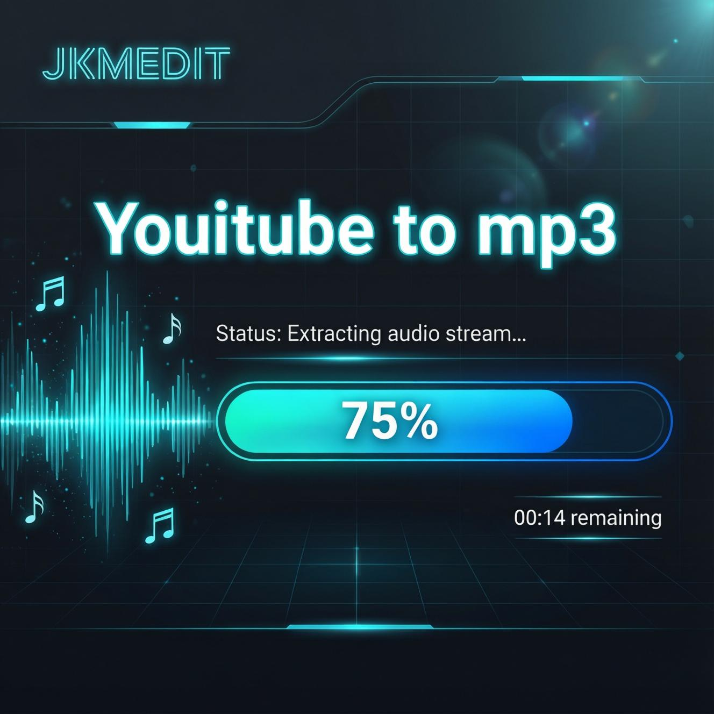
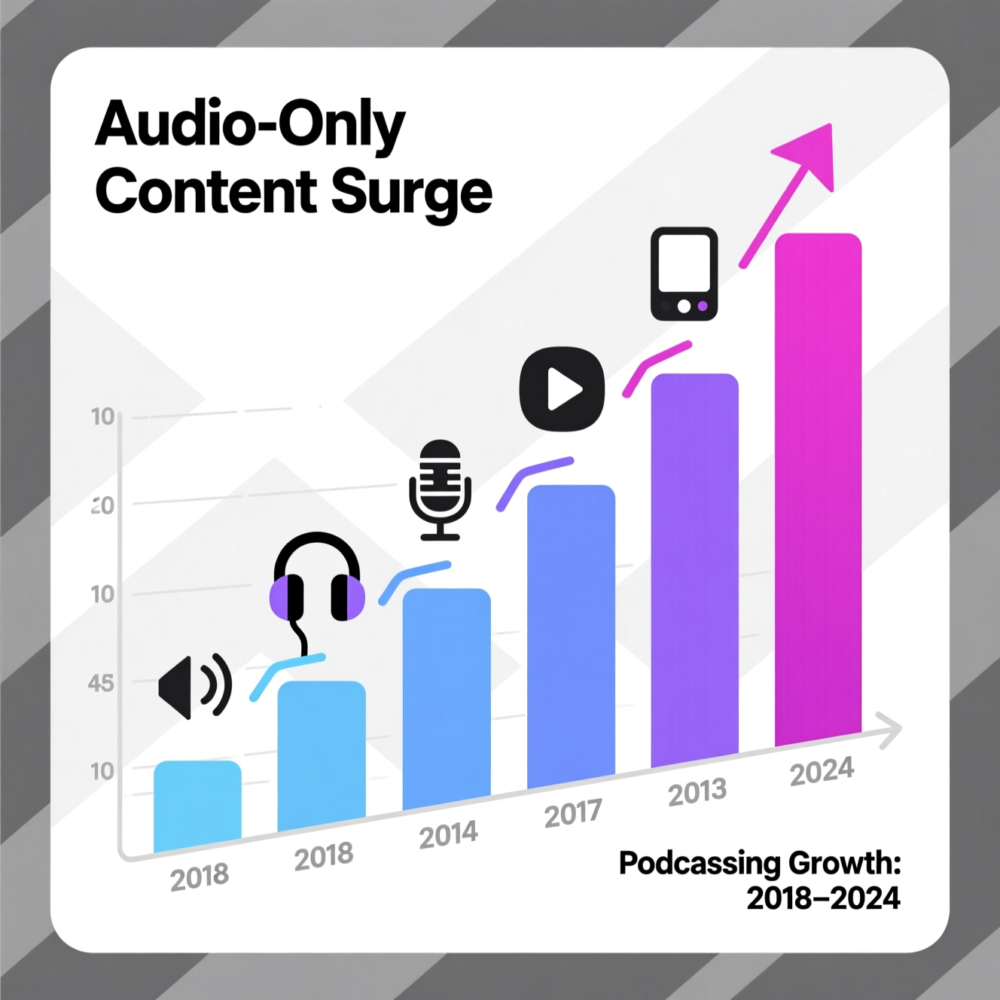
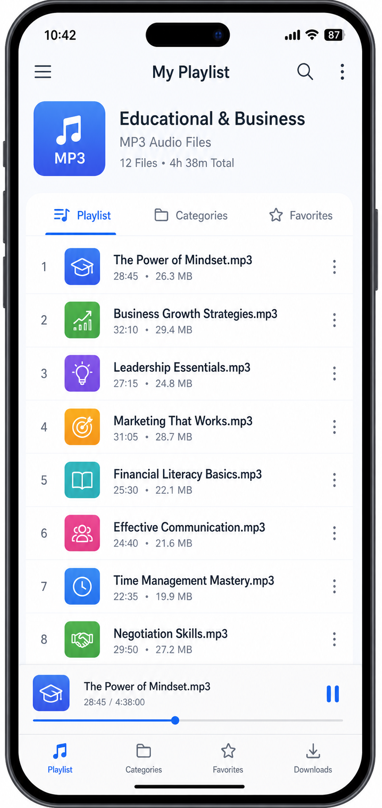

YouTube to MP3 — Convert Video Audio Into Flexible Listening Format
Fast, Clean, and Professional Audio Conversion for Modern Digital Content Consumption.

Introduction
Digital media consumption has evolved dramatically over the last decade. Millions of users now rely on online video platforms for education, entertainment, productivity, music, interviews, podcasts, business insights, tutorials, and informational content. While video content remains highly engaging, many users increasingly prefer audio-only access because it offers greater convenience, flexibility, portability, and efficiency.
Audio consumption allows people to continue learning or enjoying content while multitasking. Users can listen during commuting, exercise, work sessions, travel, study time, or other daily activities without continuously watching a screen. This shift has increased the popularity of MP3 conversion tools that transform video content into portable audio formats.
A YouTube to MP3 converter enables users to extract audio from video content and save it in MP3 format for easier listening. Whether users want educational lectures, motivational speeches, interviews, podcasts, language-learning sessions, or informational discussions in audio format, conversion tools provide a practical solution.
However, many online conversion platforms create frustrating user experiences through excessive advertisements, misleading buttons, pop-ups, redirects, intrusive layouts, unstable performance, and complicated workflows. These issues negatively impact usability and reduce user trust.
JKM Edit YouTube to MP3 is designed to provide a streamlined, professional, and user-focused conversion experience. The platform focuses on clean accessibility, fast workflows, modern usability, and lightweight performance while simplifying the overall audio conversion process. The goal is not simply conversion — it is creating a better multimedia experience optimized for modern digital users.
What Is a YouTube to MP3 Converter?
A YouTube to MP3 converter is an online utility that extracts audio from video content and converts it into MP3 format. Instead of requiring full video playback, users can access the audio portion separately.
MP3 remains one of the most popular audio formats globally because it provides:
- High compatibility
- Small file sizes
- Wide device support
- Efficient compression
- Easy portability
- Smooth playback performance
Users commonly use MP3 conversion for:
- Educational lectures
- Podcasts
- Interviews
- Motivational content
- Music listening
- Business discussions
- Language learning
- Audiobook-style playback
- Productivity content
- Informational sessions
Audio-based media consumption has become increasingly important in modern lifestyles where multitasking and mobility are essential.

Why Audio-Only Content Is Growing Rapidly
The popularity of audio consumption continues increasing because modern users value flexibility and efficiency. Unlike video playback, audio content allows:
- Hands-free listening
- Background playback
- Lower battery consumption
- Reduced internet usage
- Portable learning
- Easier multitasking
- Improved productivity
For example, users may listen to business podcasts while commuting, educational lectures during workouts, motivational sessions while working, interviews while traveling, or tutorials during offline study sessions. This convenience makes MP3 conversion highly valuable in modern digital environments.
Need to Convert a Video Now?
Experience fast, high-quality audio extraction without the annoying pop-ups.
Try JKM Edit MP3 Converter
Key Features of JKM Edit YouTube to MP3
1. Simple Conversion Workflow
The platform focuses on straightforward usability without unnecessary technical barriers.
2. Clean Professional Interface
Unlike cluttered conversion websites, JKM Edit prioritizes clarity and modern design.
3. Fast Accessibility
Users can access the platform quickly through modern browsers.
4. Lightweight User Experience
The system is optimized to reduce distractions and unnecessary complexity.
5. Modern Multimedia Design
A professional interface improves usability and workflow efficiency.
6. Browser-Based Convenience
Users do not need complicated desktop installations for basic conversion workflows.
7. Flexible Audio Consumption
The platform helps users access content more conveniently through audio format.
8. Productivity-Oriented Experience
The workflow focuses on speed, usability, and efficiency.
Benefits of Converting Video Content Into MP3
Offline Accessibility
Users can listen without continuous internet-based video streaming.
Reduced Data Consumption
Audio playback typically requires less bandwidth compared to video streaming.
Easier Multitasking
Users can consume information while performing other activities.
Portable Learning
Educational material becomes more accessible during travel or movement.
Better Productivity
Audio allows users to integrate learning and entertainment into busy schedules.
Flexible Listening Environments
Users can access content during workouts, driving, commuting, or office work.
Professional Use Cases for YouTube to MP3 Conversion
Educational Learning
Students often convert lectures, seminars, and tutorials into audio format for easier revision.
Podcast-Style Consumption
Long-form discussions and interviews become more convenient in audio format.
Language Learning
Audio listening improves pronunciation familiarity and listening comprehension.
Business and Productivity
Professionals may listen to industry discussions, market analysis, and leadership content.
Motivational and Self-Development Content
Users can access personal growth content more flexibly.
Research and Information Review
Researchers and professionals may review informational discussions during multitasking activities.
Why MP3 Remains the Industry Standard
Despite evolving multimedia formats, MP3 continues dominating audio distribution due to universal compatibility, reliable playback, small file sizes, storage efficiency, device accessibility, stable performance, and broad software support. Most smartphones, tablets, laptops, smart devices, and media players support MP3 playback without requiring additional software.
Why Choose JKM Edit YouTube to MP3?
- Professional User Experience: The platform focuses on usability instead of overwhelming users with advertisements and distractions.
- Faster Workflow Accessibility: Users can access conversion tools efficiently without complicated setup.
- Clean Interface Design: A professional interface improves clarity and navigation.
- Lightweight Performance: The system focuses on smooth operation and simplified workflows.
- Modern Accessibility Standards: The platform is optimized for contemporary browser-based usage.
- Reduced Complexity: Users can complete tasks without technical confusion.
JKM Edit vs Other YouTube to MP3 Platforms
| Feature | JKM Edit | Generic Conversion Websites | Heavy Desktop Software |
|---|---|---|---|
| Browser Accessibility | Yes | Yes | No |
| Clean Interface | Yes | Often cluttered | Medium |
| Lightweight Workflow | Yes | Medium | Low |
| Easy Navigation | Yes | Medium | Medium |
| Fast Accessibility | Yes | Medium | Low |
| User Experience Focus | High | Low | Medium |
| Modern Design | Yes | Limited | Medium |
| Minimal Distractions | Yes | Often excessive | Medium |
| Simplified Workflow | Yes | Medium | Low |
Common Problems With Generic Conversion Websites
Many users experience major usability problems while using low-quality conversion tools. Common issues include:
- Fake download buttons
- Excessive pop-up advertisements
- Redirect spam
- Misleading interfaces
- Poor mobile usability
- Slow processing workflows
- Security concerns
- Unclear navigation
- Low interface quality
These issues reduce trust and create frustrating user experiences. JKM Edit focuses on creating a cleaner and more professional multimedia environment.
Importance of User Experience in Multimedia Tools
Modern users expect fast accessibility, minimal distractions, clean interfaces, reliable workflows, mobile compatibility, professional design, and better usability. Platforms that fail to optimize user experience often lose engagement and trust. JKM Edit prioritizes workflow clarity and accessibility to create a more efficient conversion environment.
How Audio Content Supports Modern Productivity
Audio-based learning and media consumption fit naturally into modern multitasking lifestyles. Users can listen during travel, consume educational material while exercising, access motivational content during work, review lectures while walking, and learn passively during routine activities. This flexibility improves time efficiency and helps users integrate learning into daily schedules.
Educational Advantages of Audio Conversion
Educational content in audio format provides several advantages:
- Improved Accessibility: Students can access lectures more conveniently.
- Repetition-Based Learning: Audio playback allows repeated listening for better retention.
- Flexible Study Sessions: Students can study outside traditional desk environments.
- Mobile Learning: Educational content becomes more portable.
- Better Time Utilization: Users can continue learning during otherwise unproductive time.
Multimedia Consumption Trends
Digital content consumption is evolving rapidly. Modern trends include podcast growth, audio-first learning, mobile productivity, passive content consumption, smart speaker usage, voice-driven interfaces, and background listening behavior. Audio conversion tools align with these evolving user preferences.
Browser-Based Accessibility Advantages
Browser-based tools provide multiple advantages compared to traditional desktop software. Benefits include no large installations, faster accessibility, cross-device support, reduced storage requirements, easier onboarding, simplified workflows, and lower technical barriers. JKM Edit focuses on browser accessibility to improve convenience and efficiency.

Best Practices for Managing Audio Libraries
Users can improve the organization of their converted files by:
- Creating categorized folders: Separate business podcasts, educational lectures, and music.
- Naming files logically: Use clear, descriptive file names before transferring to your mobile device.
- Updating metadata: Add correct tags (artist, album, genre) for easier searching in media players.
- Regularly clearing space: Delete older, temporary conversions to keep your storage optimized.
Frequently Asked Questions (FAQ)
An online utility that extracts audio from video content and converts it into MP3 format, allowing users to listen to the audio separately without full video playback.
Audio content allows for hands-free listening, easier multitasking, reduced data usage, and portable learning, making it highly valuable in modern digital environments.
MP3 dominates due to universal compatibility, small file sizes, reliable playback performance, and broad software support across almost all devices.
Browser-based tools require no large installations, offer faster accessibility across different devices, and have lower technical barriers for everyday users.
No, JKM Edit is designed to provide a clean, professional interface free from the frustrating pop-ups, fake download buttons, and excessive ads found on generic platforms.
Ready to Build Your Audio Library?
Start extracting high-quality audio from your favorite educational and entertainment videos today.
Convert to MP3 Now